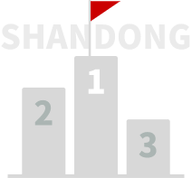
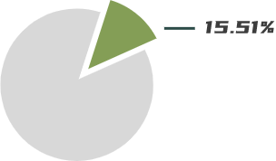
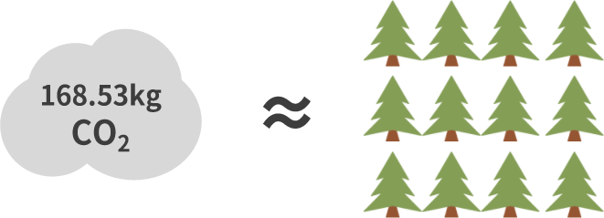
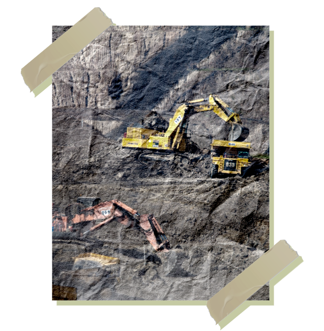

“ 山东省是转型中国的经典缩影。”
经济大省、GDP总量排全国第三的山东，是我国传统农业大省、工业大省，同时第三产业发展相对滞后，这是外界的一致印象。山东省是能源大省，作为中国重要的能源和基础工业基地，山东在煤炭、石油、金属和非金属矿产方面的资源优势得天独厚，能源工业也取得了巨大的成就。
山东与中国的发展历程有许多的相似之处，长期以煤为主的能源消费结构、高耗能产业内在工业经济内占比较大，因此探究山东省的能源转型发展历程对我国的绿色发展具有重要意义。
这一阶段的山东发展势头迅猛，GDP快速增长，能源工业也取得了巨大的成就，但优异成绩的背后是对高碳能源的依赖。
2
二氧化碳生产力指的是单位二氧化碳排放所产出的GDP，碳生产力的提高意味着用更少的物质和能源消耗产生出更多的社会财富。
“2000年
碳生产力发展的一个极大点
该年山东省在保证GDP发展增速的同时，加大了减排力度。在此之后，碳生产力又出现了连续三年的下滑。
“2005年
十年内的谷底
2004年出现了小幅反弹，而后到2005年跌入了这十年来的最低点。2005年，山东省的碳排放强度达到了顶峰。


山东省在获得规模以上工业增加值全国第一的同时，碳排放总量也为全国首位。
全国增加的碳排放总量中有15.51%源自于山东省，山东省碳排放量占全国的比重远远高于GDP总量的比重。
2005年平均每人年生活用能源中煤炭消费为67.60kg标准煤，二氧化碳排放168.53kg，约为16棵树一年的碳吸收量。

产业结构效应导致了碳排放增长，说明山东产业结构呈现“高碳化”趋势。如何通过“转方式、调结构”以控制和减少碳排放是山东省日益紧迫的重大课题。
煤炭一直是我国主要的终端消费能源，也是主要的工业能源消费品种，长期以煤为主的能源消费结构给我国带来了比较严重的环境问题。山东是典型的煤炭大省。

无论是对我国，还是对山东省，煤炭都是温室气体排放的主要来源。在煤炭带来能源动力和经济效益的同时，造成的环境危害也不可小觑。
严峻挑战
“2010年
全省45种主要矿产将有33种不能满足发展的需要。
煤炭现有开采储量只能保证矿山生产30年左右，届时将有108对矿井因枯竭而报废。
金矿区几乎都已建矿，77%的矿山保有量不用五年即可采完。
落陵煤矿兴衰史
煤炭行业的“黄埔军校”
1987💯
建成全国地方煤矿首批部特级
“质量标准化矿井”
1990🏆
荣获济宁经济支柱和“八五功勋企业”称号
2010💧
落陵煤矿因资源枯竭关井转产，长达40年的生产历程被迫结束

不论是山东还是全国，都面临着环境问题和资源衰竭的双重压力，能源转型迫在眉睫！
优化发展能源工业
- 有序发展煤炭
- 积极发展电力
- 加快发展石油天然气
- 大力发展可再生能源
“十一五如是说
随着十一五政策的提出，
山东省资源型城市纷纷加快产业转型步伐，从“灰黑印象”回归“绿色主题”。
自2005年以后，山东省二氧化碳增长率大幅下降，稳定在一个较低的水平，这与山东省节能减排政策的落实和力度的加大是分不开的。
反超！
2015年第三产业产值首次反超第二产业!
山东省第二产业偏向于高投入、高能源的发展方式，是三次产业中碳排放的主要来源。经济增长特别是第二产业的发展对发展中国家的碳排放具有决定性的影响。
对山东省这样一个工业大省来说，第三产业产值反超第二产业是一个历史性的转变，这是山东省产业结构调整的一大成就，对于我国产业结构调整具有重要意义。
“历史转变
双碳！
2020.9.22 习近平在第七十五届联合国大会一般性辩论上发表重要讲话
“双碳”概念的提出加快了我国各省市能源转型的脚步。
“中国将提高国家自主贡献力度，采取更加有力的政策和措施，二氧化碳排放力争于2030年前达到峰值，努力争取2060年前实现碳中和。”
首位！
截至2020年底，山东省能源转型成绩斐然，可再生能源高质量发展。
十四五！
2021.4.6
山东省发布《山东省国民经济和社会发展第十四个五年规划和2035年远景目标纲要》
立足能源消费大省实际，统筹推进化石能源清洁高效利用与非化石能源规模化发展，优化调整能源结构，加快能源发展方式转变。
“2025年能源发展主要目标
01
总量目标
能源消费总量控制在454亿吨标准煤以内,
煤炭消费量控制在35亿吨左右。
02
结构目标
煤炭消费比重下降到60%以内,
非化石能源消费比重提高到13%左右.
道阻且长
无论是山东还是中国，取得的成绩值得肯定，但是还有许多的问题亟待解决。
对于现阶段的中国，曾是经济支柱的第二产业早已退居第三产业之后，
但值得注意的是，随着“互联网经济”的不断增长，传统意义上低能耗的第三产业或将或将成为新的能耗大户。
中国数据中心数量约有7.4万个，已建成的超大型、大型数据中心数量占比达到12.7%。
随着国内互联网经济的发展，这一数量将不断增长,与之对应的能耗增速也增长迅速。
根据中国电子节能技术协会的数据，中国数据中心的耗电量已连续8年增速超12%，2020年总耗电量将达2962亿kWh。
“2019年
道阻且长，行则将至，行而不辍，未来可期。
目前疫情形势仍不容乐观，世界经济陷入低迷，应对气候问题成为发展新能源、新技术、新商业、复苏经济以及抢占未来十几年发展优势的重要契机。
同时在不断加剧的全球气候变暖面前，实现碳中和决不是终点，它只是一个阶段性的成果，我们要走的路还很漫长。